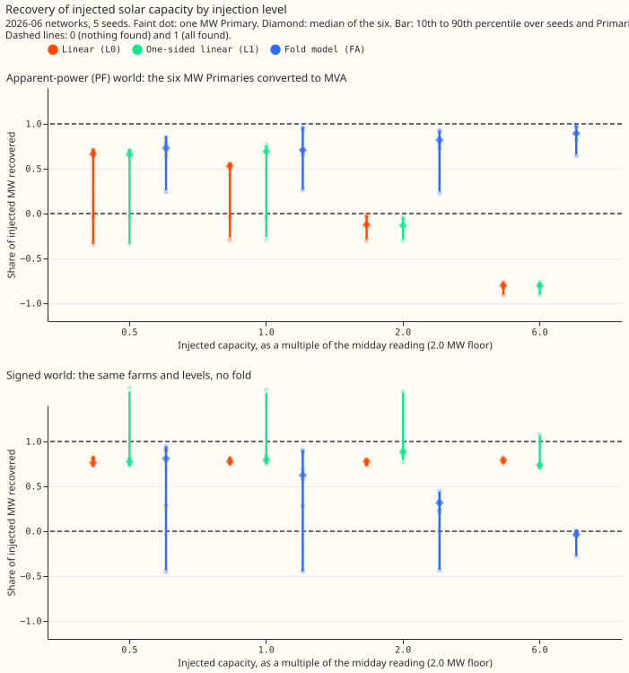
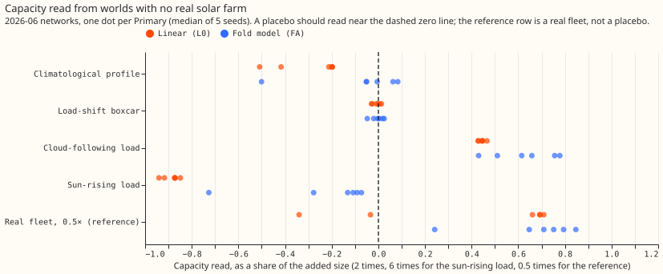
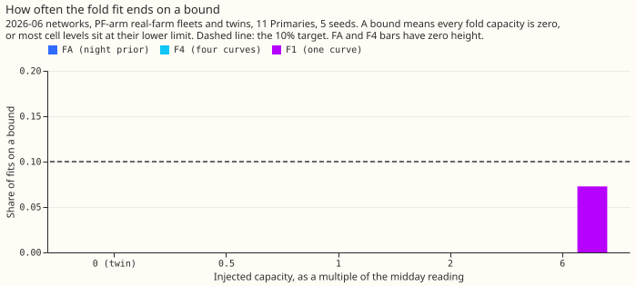
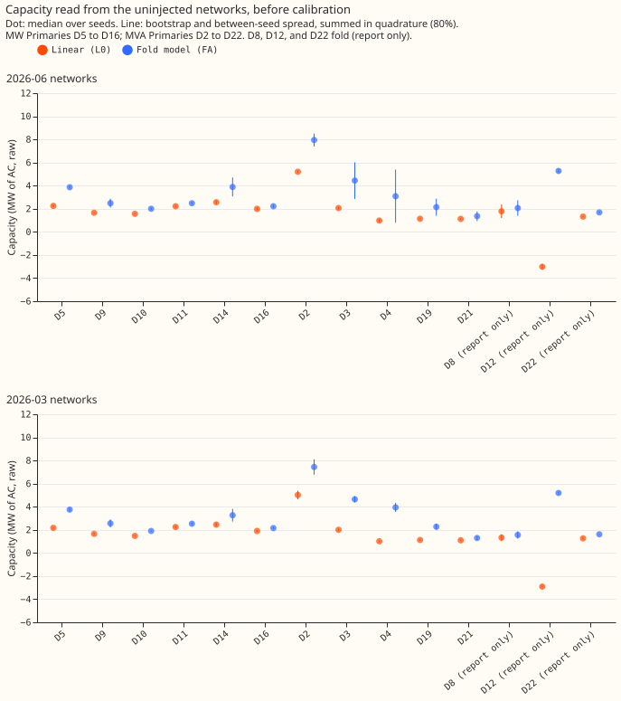
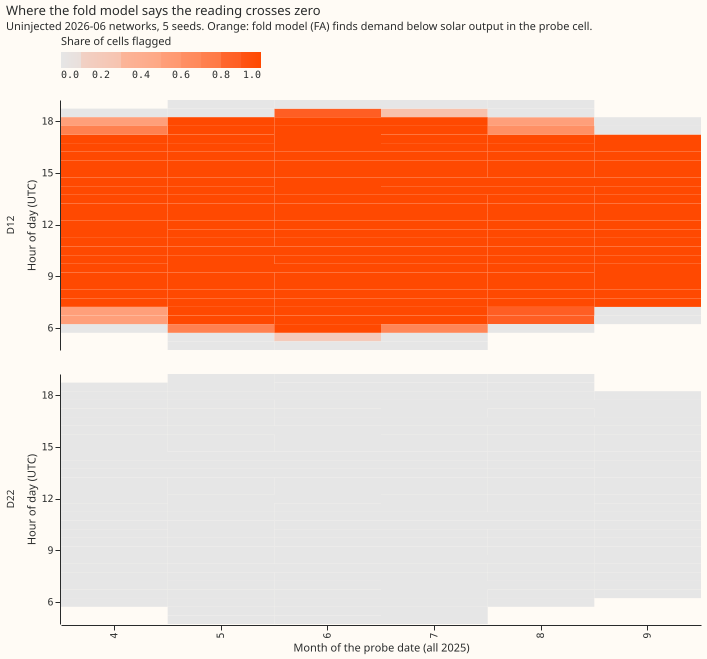

Can a probe read the capacity of unmetered solar at substations that report apparent power?
The hypothesis is partly supported: a fold model reads 0.7 to 0.9 of an added solar fleet at every level tested, and the linear probes fail from 2 times upward. The pre-registered gate failed, and two Primaries, D5 and D10, decide several bars. Six of the 12 pre-registered bars passed at the 2026-06 cutoff. The matched-level bar A1 failed, so only the 12 uninjected neural networks (four conditions) ran at the 2026-03 cutoff. The fold fit now ends on a bound in 0% of fits, which removes the fault that sank experiment 656's 6-times worlds.
We asked whether the unmetered solar capacity behind a substation can be read when the meter reports apparent power (megavolt-amperes, which never goes negative) rather than signed megawatts. Six Primary substations report signed megawatts. We converted their flow to synthetic apparent power, added a solar fleet of known size, and trained a neural network on the result. The probe holds the calendar inputs of the neural network fixed, feeds the neural network the weather of other days, and regresses the neural network's output on a solar-output curve. The slope is the capacity the probe reads, in megawatts of alternating current (AC). We compare the capacity read from a network trained with the fleet against its twin trained without it. This page covers 130 neural networks at the 2026-06 cutoff (26 conditions of 5 seeds each, a condition being one world: a reactive-power arm, a kind of injection, and a level) and 12 uninjected neural networks at the 2026-03 cutoff.
Terms used below.
- MW Primaries and MVA Primaries. The six MW Primaries (D5, D9, D10, D11, D14, D16) are metered in signed megawatts. The eight MVA Primaries are metered in apparent power: D2, D3, D4, D19, and D21 never come near zero flow on a sunny midday, and D8, D12, and D22 do (they "fold").
- The fold. Apparent power is the length of a real-power part and a reactive-power part. When solar output exceeds demand, the reading falls to the reactive floor and then rises again, so a linear fit reads the wrong sign.
- Midday reading. A Primary's median flow over sunny half-hours from 10:00 to 15:00 UTC in April to August, in MW. D5's is 0.88 MW and D10's is 1.2 MW.
- Injection level. The AC capacity of the added fleet is the larger of the level times the midday reading and 2.0 MW. The floor makes the 0.5-, 1-, and 2-times worlds at D5 all 2.0 MW, and D10's 0.5- and 1-times worlds 2.0 MW.
- Recovery. The capacity read from the network trained with the fleet, minus the capacity read from its twin, divided by the fleet's AC capacity.
- Probes. L0 is the linear probe of experiment 621. L1 is L0 on rows well above the reactive floor. FA is the fold model with four solar-output curves and a prior on each probe cell's demand from the night reading. F4 is FA without the prior, and F1 is F4 with one curve.
- Worlds. The PF world has reactive power 0.25 times the median real power of that half-hour of the week (power factor 0.97). The signed world keeps the signed target. The floor and zero- reactive worlds change the reactive power only.

Figure: in the upper panel the linear probes fall below zero at 2 times, and the fold model does not. The signed panel shows the same farms with no fold. Linear recovery stays at 0.74 to 0.88 there. The fold model falls from 0.81 to -0.04 as the level rises, because a model that can only add a fold fits badly to a target that never folds (see the audit section).
At 2026-06, 6 of 12 pre-registered bars passed. The bars are as fixed in the plan commit.
| Bar | Result | Pass |
|---|---|---|
| A1 Matched-level fold-free loss: PF over signed recovery of the same farm in 0.90 to 1.10 at 5 of 6, for L0, L1, and FA at 0.5, 1, and 2 times | no cell of the nine reaches 5 of 6; the best is 3 of 6 (FA at 1 times) | fail |
| A2 Native worlds within ±0.12 of the six's median (0.68) at 4 of 5 | 4 of 5 (D3 at 0.82 is outside) | pass |
| A3 Two-sided placebos under 0.25 of the real 0.5-times read | climatological 0 of 6 and 0 of 5; boxcar 4 of 6 and 5 of 5 | fail |
| A4 Leave-one-Primary-out factor in 0.55 to 0.95, spread under 0.15 | 0.661 to 0.692 at all six | pass |
| A5 Interval coverage at least 60% (L0 at 0.5 times) | 0.36 | fail |
| B1 FA calibrated recovery in 0.75 to 1.25 at 4 of 6 in four worlds (PF and floor, 1 and 2 times) | 3, 5, 3, and 4 of 6 | fail |
| B2 PF 6 times: FA calibrated recovery in 0.75 to 1.25 at 4 of 6 | 5 of 6 (D5 is 0.72) | pass |
| B3 At PF 2 times, FA's median absolute error from 1 at least 0.10 below L1's | 0.15 against 0.37 | pass |
| B4 Sun-rising-load placebo: FA under 0.25 of the 6-times read at 5 of 6, and no crossing flags | 4 of 6; flags on 0.0% of cells | fail |
| B5 Interval coverage at least 60% at PF 1 and 2 times (FA) | 0.50 and 0.42 | fail |
| B6 Crossing map: balanced accuracy at least 0.80 at 1 and 2 times, false crossings at most 10% | 0.84 and 0.94; 3.1% | pass |
| C1 Under 10% of FA fits end on a bound | 0.0% | pass |
Two changes from experiment 656 worked. The fold fit's five starting capacities (0.25 to 8 times the midday reading) remove the 6-times failure: FA reads 0.89 and 0.90 there, against -0.11 in experiment 656. Intervals that add the between-seed spread raise coverage in bar A5 to 0.36 (experiment 656: 0.18) and in bar B5 to 0.50 and 0.42 (experiment 656: 0.17 and 0.14), still below the 0.60 bar.
| Median recovery over the six MW Primaries | 0.5 times | 1 times | 2 times | 6 times |
|---|---|---|---|---|
| PF world, L0 | 0.66 | 0.53 | -0.12 | -0.81 |
| PF world, L1 | 0.66 | 0.68 | -0.13 | -0.81 |
| PF world, FA | 0.73 | 0.73 | 0.80 | 0.89 |
| Signed world, L0 | 0.76 | 0.77 | 0.78 | 0.79 |
| Signed world, FA | 0.81 | 0.62 | 0.32 | -0.04 |
Audit of the failures
An independent Sonnet audit reproduced every bar and explained each failure below; no bar is
re-scored. The audit brief is briefs/e662_audit_brief.md in the private folder.
- A1 also fails at D9, D11, D14, and D16, where the floor does not apply. At D9, D11, D14, and D16 the linear probes read -0.01 to -0.15 at 2 times, so the fold itself, not only D5 and D10, breaks them. At D5 and D10 the floor injects 2.26 and 1.66 times the midday reading even at the 0.5-times level. Both Primaries therefore sit past the fold at every level, and L0 reads them at -0.34 to -0.02.
- The fold model is not a fair A1 denominator. On the signed target, which never folds, FA sets at least one reactive term to zero in 59 to 74% of fits (both in 39 to 56%) and flags crossings on 41 to 72% of cells at the six MW Primaries at 2 and 6 times. A square-root output cannot match a target that goes negative. A1's FA ratios (2.1 to 3.8 at 2 times) come from this collapsed denominator.
- A3 fails because it is two-sided. The linear probe reads the climatological placebo at -0.2 to -0.5, and experiment 656's one-sided bar would have passed it at 11 of 11 sites. FA reads it at -0.05 to 0.08 except at D5 (-0.50), but several of those reads exceed 0.25 of the real FA 0.5-times read (D11 0.42, D16 0.33, D4 0.53), so FA would fail a one-sided bar too. The placebo is sized at 2 times and compared with the 0.5-times read, a level mismatch in the bar. At D5 and D10 the real 0.5-times L0 read is itself near zero or negative (-0.34 and -0.03), so the bar cannot pass there for L0.
- B4 and B5 depend on D5 and D10. The sun-rising load reads 1.13 and 0.34 of the real read at D5 and D10, and 0.07 to 0.16 elsewhere. Without D5 and D10, B5 reads 0.875 at both levels. The same exclusion fails A4 (only four Primaries) and B6 (balanced accuracy 0.71 at 1 times), so the verdicts rest on the two small-reading Primaries in both directions. B1 fails with or without them, because D11 and D16 overshoot to 1.3 and 1.4 at 1 times.
- Coverage is set by the seed spread alone. The bootstrap half-width is 0.01 to 0.07 MW and the seed term 0.04 to 1.4 MW. The leave-one-Primary-out factors barely differ (0.66 to 0.69), so the intervals carry no uncertainty about the factor. Native Primaries are scored with the six Primaries' factor and miss at all five.
- The FA prior is stronger in the injected fit than in the twin fit. The prior's weight scales with the median within-cell spread of the probed reading. The audit found that spread 0.9 to 2.4 times the twin's at 0.5 and 2 times and up to 12 times at 6 times (not re-checked here). Some of FA's capacity difference is therefore a change of regularisation, which we did not refit to measure.
- C1 measures capacity collapse only. At least one reactive term sits at zero in 37 to 60% of PF FA fits and 59 to 74% of signed FA fits, and a flag on fits with reactive terms at zero would not have passed.

Figure: the cloud-following load is read as solar by both probes. The fold model reads 0.64 of the load's size and the linear probe 0.44, so neither separates solar output from demand that follows the clouds, as in experiment 656. Against the real 2-times fleet's read, the ratios are 0.83 for the fold model and -3.7 for the linear probe, which has the wrong sign there.

Figure: in the real-farm fleets and twins, the only fits on a bound are one-curve fits at 6 times (about 7%). The night-prior and four-curve fits never end on a bound there. In the sun-rising-load placebo, which has no solar to find, FA ends on a bound in 77% of fits, as it should.
Real-data capacity (uninjected neural networks, both cutoffs)
The calibrated columns divide the linear probe's capacity by 0.68 (bar A4's factor) and the fold model's capacity by 0.70 (its recovery in the power-factor (PF) world at 1 times on the six MW Primaries). Both calibrations therefore assume power factor 0.97 and the response of the six MW Primaries. The ranges are 80% intervals from the bootstrap and the seed spread.
| Primary | Linear raw, 2026-06 / 2026-03 (MW) | Linear calibrated, 2026-06 (MW) | Fold model raw, 2026-06 / 2026-03 (MW) | Fold model calibrated, 2026-06 (MW) |
|---|---|---|---|---|
| D2 | 5.2 / 5.0 | 7.7 | 8.0 / 7.4 | 11.3 (10.4 to 12.1) |
| D3 | 2.1 / 2.0 | 3.0 | 4.4 / 4.6 | 6.3 (4.0 to 8.6) |
| D4 | 1.0 / 1.0 | 1.5 | 3.1 / 4.0 | 4.4 (1.1 to 7.7) |
| D19 | 1.1 / 1.1 | 1.7 | 2.1 / 2.3 | 3.0 (2.0 to 4.1) |
| D21 | 1.1 / 1.1 | 1.7 | 1.4 / 1.3 | 1.9 (1.3 to 2.5) |
| D8 (report only) | 1.8 / 1.3 | 2.6 | 2.1 / 1.6 | 2.9 (2.0 to 3.9) |
| D12 (report only) | -3.0 / -2.9 | not defined | 5.3 / 5.2 | 7.5 (7.2 to 7.8) |
| D22 (report only) | 1.3 / 1.3 | 1.9 | 1.7 / 1.6 | 2.4 (2.3 to 2.5) |

Figure: the two cutoffs' intervals overlap at all 14 Primaries, for both probes. The fold model's medians differ most at D4 (3.1 and 4.0 MW), D14 (3.9 and 3.3 MW), D2 (8.0 and 7.4 MW), and D8 (2.1 and 1.6 MW). D12 is the Primary whose linear read is negative at both cutoffs while the fold model reads +5 MW. The capacities are raw and uncalibrated.

Figure: D12 is flagged at midday in all six months, April to September, and D22 is not flagged. The map passed bar B6 on injected worlds, but that pass relied on D5 and D10 (see the audit section). On the uninjected twins, D8 and D22 are flagged on 0% of cells, so D8 does not behave as a folding Primary here, while D5 is flagged on 46% of cells and D4 on 19%.
Deviations from the plan
- Fold fit. 40 bootstrap draws in place of 200, 40 donor rows per probe cell, and the bootstrap only on the PF twin and the PF real-farm fleets.
- 2026-03. Stop rule 2 fired when A1 failed, so only the four twins ran at that cutoff. The calibration at 2026-03 reuses the 2026-06 factors.
- B4. Coded two-sided (the absolute read) after the code review; the plan table now states this.
- Boxcar placebo. The boxcar's height stays capped at the midday reading, so at D5 and D10 the placebo carries less energy than the 2.0 MW fleet.
- Not run. The signed-world energy conversion and the 2026-03 injected worlds.
Caveats
- The reactive power of the real meters is unknown, and power factor 0.97 is an assumption.
- NGED's event labels are incomplete, so the clean rows may hold unlabelled events.
- D5 and D10 have midday readings of about 1 MW, so a 2.0 MW floor puts them past the fold in every injected world.
- One set of farms and one network architecture.
Checks
- Forecast checks: the experiment scores no forecast, so the median-minus-mean and quantile-score checks do not apply.
- Audit triggers that fired: a control failed (A1, A3), a leave-two-out flip (A4, B5, B6 with D5 and D10 removed), and a nested-arm result (FA on signed worlds). The audit report is in the private briefs folder.
- Code review (Sonnet): the review accepted the per-cutoff grouping in the coverage bar, the two-sided B4, the 0.05 guard on A1's denominator, and the relative bound threshold. It also suggested raising the boxcar cap, which stays because a load transfer cannot remove more than the load.
- Audit triage: all findings are recorded above; none changes a pre-registered bar.
What the next experiment should answer
Does a fold model with a night prior hold 0.7 to 0.9 recovery when the injection is sized past the fold at every Primary by construction, the signed denominator is a plain linear probe, and the intervals include the site-to-site variation of the calibration factor? And what separates solar output from the cloud-following load that both probes misread?